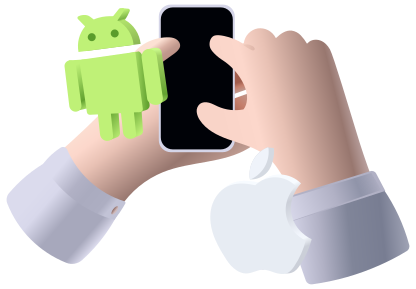
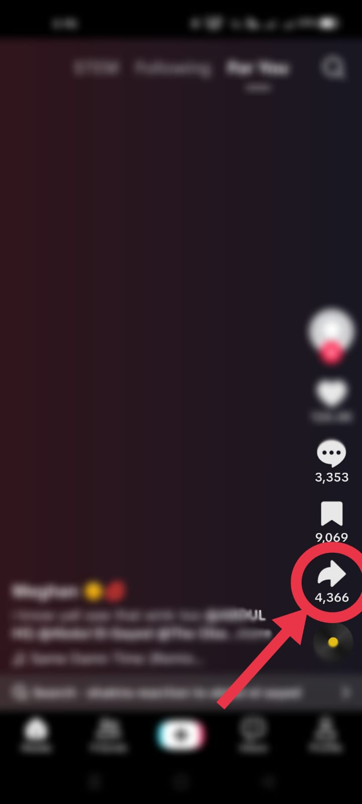
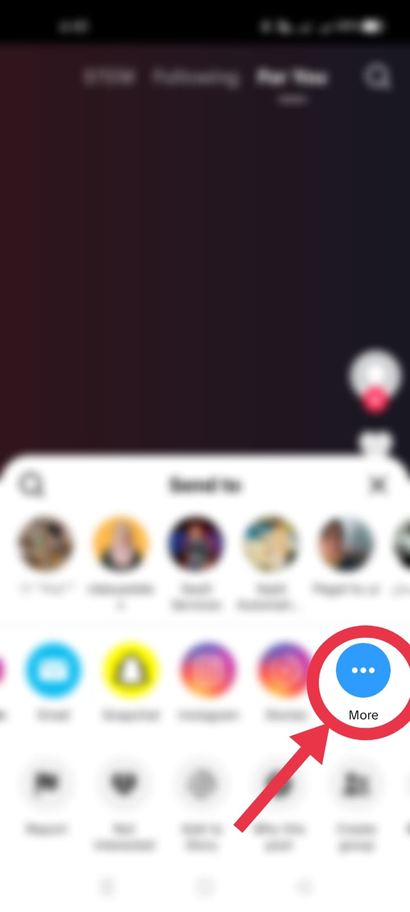
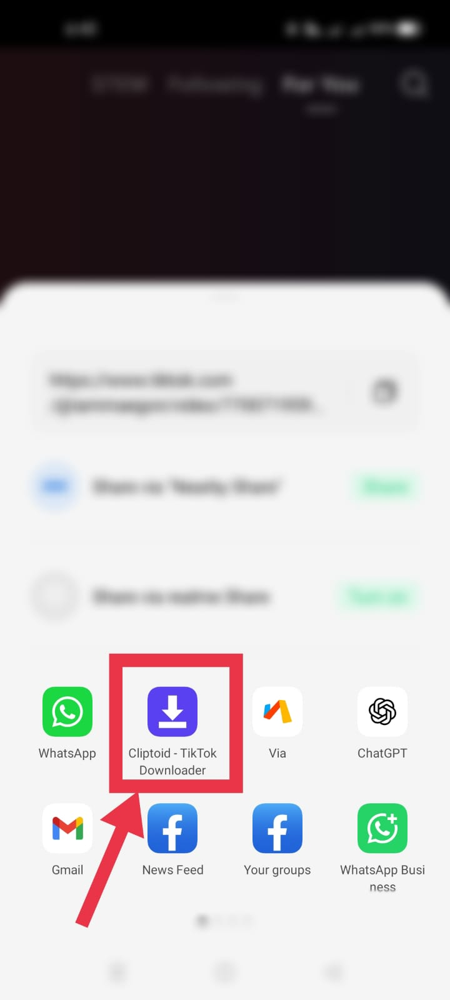

Copy the link
In TikTok, tap Share, then Copy link on a video you have permission to save.
Unlimited
No Watermark!
MP4 and MP3
There are two ways. On Android, install Cliptoid once and save straight from TikTok's share menu. On any device, copy the link and paste it into the box at the top of this page, as shown in these three steps.
Written and tested by Dilawar, the developer of Cliptoid. Last reviewed few mins ago.
In TikTok, tap Share, then Copy link on a video you have permission to save.
Paste the link in the box at the top of this page and press Download. A preview of the post appears.
Pick MP4 without watermark, MP3 audio or a slideshow photo, or copy the caption and hashtags.
Copy the link in TikTok, paste it into Cliptoid, then pick a quality and save. The animation below shows the entire flow on a phone.
Use Cliptoid or download content to grow your streak and earn points.
A TikTok downloader is a web tool that saves a TikTok post to your device from its link. You paste the link, the tool checks which files that post makes available, and you choose what to keep. That can be the video as MP4, the sound as MP3, the photos from a slideshow, or the caption text. Cliptoid works in your browser, so you do not need an account. Installing it is optional.
Speed depends on your connection and on how quickly TikTok returns the post's files, so we do not quote a number. What we control is how many steps stand between you and the file. With the app installed on Android, you tap Share in TikTok, choose Cliptoid, and the link is already in the box. Without it, you copy the link, paste it and press Download. Either way you see a preview first, so you can check the clip before you save it.
When you save a video with TikTok's own Save button, the app can add its logo and the creator's username to the file. A downloader without watermark works from the post's link instead and offers the video file that link returns, which normally has no logo overlay. If a creator or someone who reposted the clip placed a logo inside the picture, no downloader can remove it. Our TikTok watermark remover guide explains what is and is not possible.
On Android, send a video to Cliptoid straight from TikTok's share menu.
See the clip, caption and hashtags before you choose a file.
Save MP4 video or MP3 audio from the same link.
Save the photos from a slideshow post one by one.
Copy the caption and hashtags without retyping them.
Works in your browser with no account, no extension and no daily limit.

On Android, share any TikTok video to Cliptoid from the share menu. On iPhone, copy the link and paste it here. Read the phone guide or the iPhone guide.
Copy the video address from TikTok, paste it here and press Download. Read the PC guide for details.
Convenient inside the app, but it only appears when the creator allows downloads, and the saved file carries the TikTok logo and the creator’s username.
Works on almost any video, but it captures buttons and captions too, and the quality is lower than the original file. Use it as a last resort.
Starts from the post’s link, shows a preview, and offers the files returned for that post: MP4, MP3, slideshow photos and the caption. Public posts only.
It can be, if you know what to look out for. Many downloader sites are crowded with fake download buttons and pop ups, and some push you to install an app or an extension you do not need. A few simple rules keep you safe on any site, including ours:
Cliptoid works in your browser, does not ask for a login and never asks for your TikTok credentials. Read our privacy policy to see how links are handled.
Most people are not doing anything exotic. They want to keep their own videos after losing the original file, watch a recipe or workout offline, send a clip to a friend who is not on TikTok, collect reference clips for a project, or save their own edits to repost on another platform. All of these are fine when the video is yours or you have the creator’s permission. If it is someone else’s work, ask first.



Both short share links and full post addresses can be pasted into the box.
Make sure it is the video you meant before you save a file.
Media links can expire. Copy the link again from TikTok and press Download once more.
On Android, the share menu method above is the shortest route. On any phone, the copy link method works in your regular browser. If you cannot find the saved file afterwards, open your browser's download list or your Files app and look in Downloads.
Cliptoid runs in Chrome, Edge, Firefox and Safari on Windows, Mac and Linux. Open the video on tiktok.com, copy the page address (or use Share, then Copy link), paste it here and press Download. Chrome lists your saved files in its downloads panel, which opens with Ctrl and J. The share menu shortcut is for phones, so on a computer you use the paste method.
The share menu shortcut is not available on iPhone, because Safari cannot add web apps to TikTok's share menu. The copy link method works well:
Tip: in Safari, tap the share icon and choose Add to Home Screen to open Cliptoid in one tap next time.
See the TikTok MP3 download guide for more audio details.
Read the TikTok slideshow and image guide for more information. Image results depend on what the media service returns.
Cliptoid is an independent browser tool, not a TikTok service. It checks post links through a media resolver and displays the formats returned for each link. A post may be unavailable because it is private, deleted, restricted, unsupported, or because a media URL has expired. Quality and format options vary; a particular result is not guaranteed.
Still stuck? Read the download troubleshooting guide.
Cliptoid offers the resolutions available for each post, up to 4K when the original upload has it, along with the other formats returned for that post. The options for your link appear as separate buttons in the results, so you can pick the size you want. No downloader can improve a video beyond the quality it was uploaded in, so a clip that was uploaded in low resolution stays low resolution. Check the preview and the available options before you save.
Only download, copy, or reuse content when you own it or have permission and your use complies with applicable law and platform terms. You are responsible for the links you submit and how you use the results. Cliptoid is independent and is not affiliated with TikTok, ByteDance, or Douyin.
Yes. There is no charge, no sign up and no daily limit on how many links you check.
The file offered is the one returned for the post's link, which normally has no logo overlay. Check the preview before you save. A logo that was added inside the picture by the creator or by someone who reposted the clip stays in the video.
The shortcut needs Cliptoid installed from Chrome on Android. In TikTok, tap Share, then More, and look for Cliptoid. Install it again if it is missing. On iPhone the shortcut is not available, so use the copy link method.
Copy a public post link, paste it into the downloader, select Download, and choose Download Video MP4 (No Watermark) if that option is available.
Paste the public post link and select Download. Choose Download Audio MP3 from the results when the service returns an audio file.
When slideshow images are available, Cliptoid displays them in the results with individual save buttons. Some posts may not return image files.
Paste the public post link into the downloader. If the post is accessible and slideshow images are returned, you can preview and save the available images individually.
No TikTok login is requested. Do not paste passwords, private messages, or other sensitive information into the tool.
Your browser handles the save. Look in its download list or the Downloads folder configured for your device. On a phone, the file may appear in the browser's download area or Files app.
Yes. Open this page in a current browser, copy a public post link, and paste it into the downloader. No browser extension is required.
Media links can expire, and a post's access or availability may change. Copy a fresh link and submit it again if the original result is no longer available.
No. Cliptoid is used for downloading TikTok video and audio from public posts links. It does not bypass privacy settings or request your TikTok credentials.
Saving a file does not grant reuse rights. Get permission from the rights holder and follow applicable laws and platform terms before sharing or republishing content.
Get device-specific help for downloading on iPhone and downloading on PC or Mac. See the download video TikTok guide, the step-by-step download guide, download troubleshooting, playback help, private-post limits, Cliptoid vs SnapTik and cliptoid. Browse the troubleshooting hub for all help articles.
I use TikTok every day, and I tried almost every TikTok downloader I could find. Most felt slow and clumsy, with too many steps and too many pop ups. So I built Cliptoid, a downloader I would want to use myself. If something does not work, or you have an idea that would make the tool better, write to me at businesswithdilawar@gmail.com. Please respect every creator's work and privacy, and only save content you have permission to use.
Read our About, Privacy Policy, and Terms of Use, or visit the contact page.